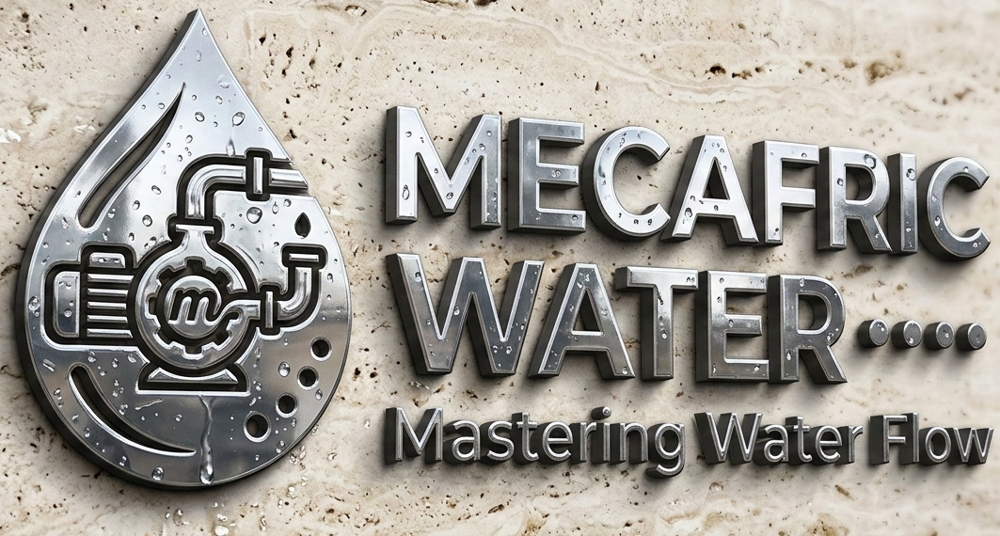

YOUR PARTNER FOR SUCCESS
Depuis sa création, Mecafric Water place au cœur de sa mission la fourniture de solutions industrielles fiables et de haute qualité.
Notre expertise technique, associée à un engagement constant pour l’excellence, nous a permis de devenir un acteur de référence dans le domaine des vannes industrielles, aussi bien au Maroc.
Chaque jour, nous mettons tout en œuvre pour comprendre les besoins spécifiques de nos clients et y répondre avec des produits performants et des services sur mesure, adaptés aux exigences des secteurs industriels les plus exigeants
